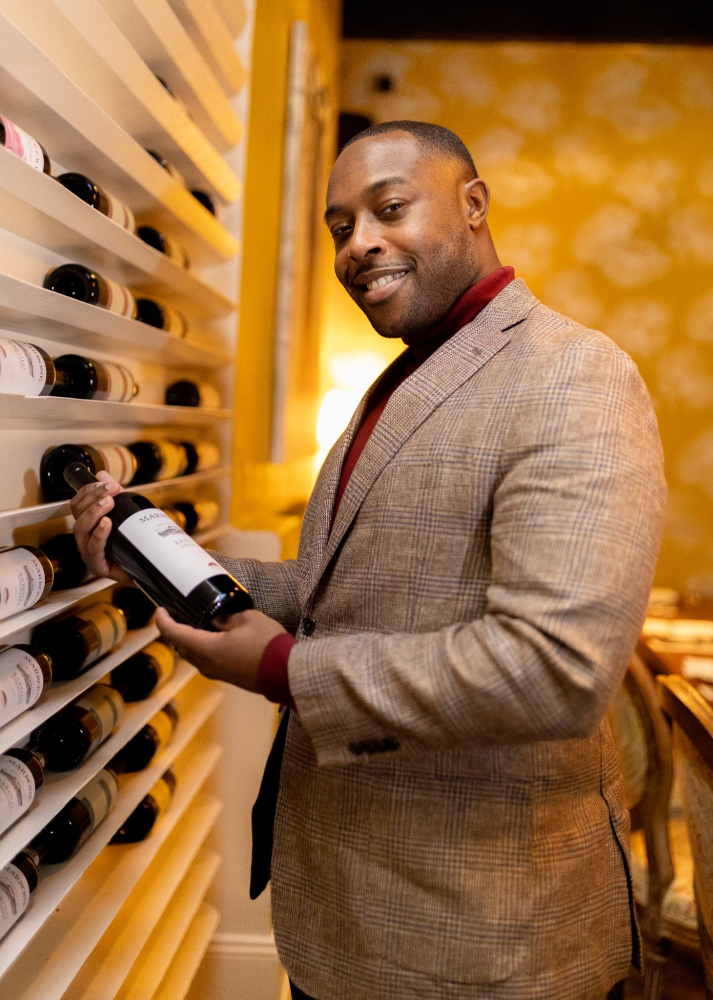

"Wine doesn't belong behind glass. It belongs in the room — in the music, the conversation, the moment."
Mahlik Rich is a WSET Level 3 certified beverage director, wine curator, and the founder of Sip More LLC. With over six years embedded in New Orleans hospitality, he's built a career at the intersection of wine culture and lived experience — working across Four Seasons, nightlife, and the city's most dynamic food and beverage spaces.
Sip More was built on a simple but radical idea: that wine education and wine culture shouldn't feel exclusive. That the same way a great playlist transforms a room, the right bottle — introduced the right way — can shift how people experience a night entirely.
We build beverage programs for restaurants and hospitality groups who believe that too. Programs that feel like they belong in the room, not just on the menu.
Every program, every event, every pairing is designed to meet people where they are — not where wine culture traditionally expects them to be.
WSET Level 3 credentials and six years in the industry inform everything we do. But we believe the best wine education feels like conversation, not a lecture.
From the music in the room to the pour in the glass, every detail is considered. Hospitality at its highest is the art of making people feel something.
Whether it's scholarships at the Golf Classic or creating space for new wine drinkers at Velvet Sessions, Sip More is always building something bigger than the bottle.
One of the wine industry's most recognized intermediate qualifications, covering viticulture, winemaking, and the systematic approach to tasting wines from across the globe. Passed August 2025.
Deep roots across the city's hospitality ecosystem — from luxury hotel service at the Four Seasons Chandelier Bar to curating 30+ cultural events and activations citywide.
Built Sip More from the ground up as a wine and experiential hospitality brand — developing the Velvet Sessions, Velvet Brunch, Press Play, and the Sip & Smile Golf Classic.
"I got into wine the same way most people get into music — through feeling, not theory. The theory came later. The feeling never left."
— Mahlik Rich
The connection between music and wine has always been at the center of how Sip More operates. Both are about atmosphere, about timing, about creating a moment that people feel before they can describe it. The Velvet Sessions didn't start as a concept — it started as a feeling Mahlik wanted to recreate every time he walked into a room.
Wine has a gatekeeping problem. Too many tasting notes read like vocabulary tests. Too many sommeliers perform expertise rather than share it. Mahlik's approach has always been the opposite — meet the person where they are, find the wine that makes sense to them, and let the curiosity follow. That's how you build a wine drinker for life, not just for the evening.
New Orleans is one of the few cities in America where food, music, and culture are genuinely inseparable. It made Mahlik a better hospitality professional and a better curator — because the city doesn't let you cut corners on experience. Every room you walk into has a standard for how things should feel. Sip More was built with that standard in mind.
Sip More is New Orleans for now — and that's intentional. The roots have to be deep before the branches can spread. But the vision has always been bigger: a brand that brings culturally grounded wine experiences to cities where that intersection doesn't yet exist. The program is being built to travel.
Whether you're a restaurant group, hotel, or brand looking for a beverage partner who brings culture with the expertise — let's talk.